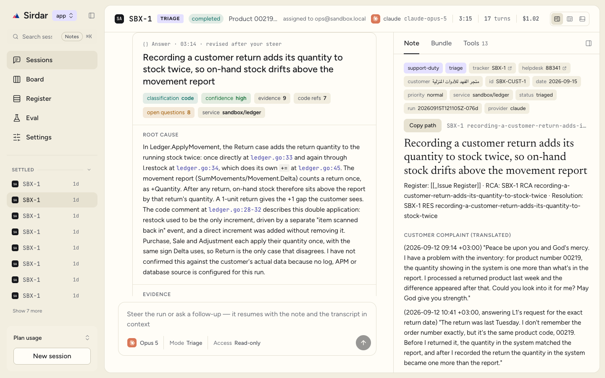
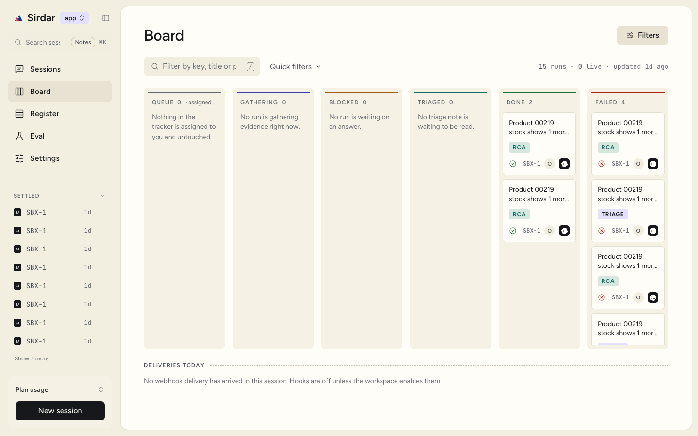
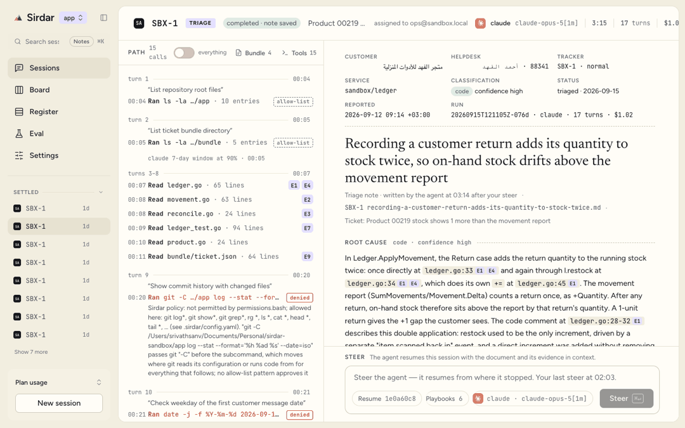
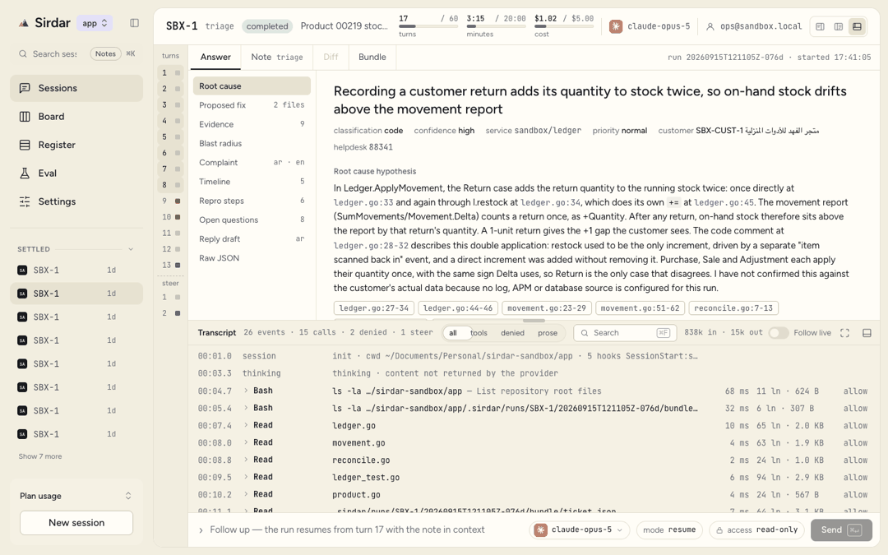

A ticket arrives. It leaves fixed.
Sirdar reads the ticket, the code, the logs and the customer's own words and writes the triage; when you say go it implements the fix on its own branch; after the merge it writes the root cause and the resolution. A desktop app for macOS, Windows and Linux, and a command-line tool, over the coding agent you already pay for.
Apple silicon. Intel Mac All platforms
go install github.com/srivathsanvenkateswaran/sirdar/cmd/sirdar@latest
Apache-2.0. It runs on your machine, on your logins, and it never posts to your tracker.

Triage, fix, root cause. The gate between them is you.
-
sirdar initScaffolds
.sirdar/config.yaml, the playbooks, and the git excludes.Nothing runs yet.
-
sirdar doctorChecks that the provider CLI is installed and signed in, that each configured source answers, and that the notes directory and templates are usable.
Still nothing runs.
-
sirdar triage KEYFetches the ticket host-side, runs one agent session in your workspace, and writes the triage note: the evidence, a root-cause hypothesis and a proposed fix.
Reads only.
you read the note here; running fix is the approval
-
sirdar fix KEYImplements that note's proposed fix on a branch in a linked worktree and shows you the diff; commits, pushes, opens the pull request.
Writes only in its worktree.
-
sirdar rca KEY --pr URLAfter the merge, writes the RCA and the resolution draft, and says whether the triage hypothesis held.
Marks the note resolved.
The desktop app and sirdar serve start the
same runs from a New session form, show them on a board, and stream each one as it
happens; the composer answers a blocked run or steers a finished one. Same binary,
same workspace, same notes.
Every run on one board. The rail is the legend.
Six lanes: queue, gathering, blocked, triaged, done, failed. One hue per state, on the lane rail and on every badge in that lane, so a run's state is never colour alone. The tracker's queue sits in the first lane and the day's webhook deliveries under them.

Three ways to work a run.
The Session window has three layouts. Pick one in Settings or from the switcher in the session header; the window remembers it. In each, the composer at the bottom answers a blocked run or steers a finished one, and on a fix the Changes pane shows the diff hunk by hunk, with Keep or Drop on each, before anything is pushed.
-
Conversation
The transcript as a chat, the answer as a card at its end, an inspector on the right.
-

Document
The note or the diff as the window, the path the agent took beside it.
-

Workbench
Documents in tabs over a console of every call, with gauges in the header.
It drives the coding agent you already have.
Each one signs in with its own login. Sirdar spawns the CLI you are already signed in to and never stores or proxies a credential: no Sirdar account, no server, no telemetry.
-
 Claude Code
Claude Codeclaude -
 Codex
Codexcodex -
 Qwen Code
Qwen Codeqwen -
 Cursor Agent CLI
Cursor Agent CLIcursor -
 GitHub Copilot CLI
GitHub Copilot CLIacp -
 OpenCode
OpenCodeacp -
 Kimi CLI
Kimi CLIacp -
 Any OpenAI-compatible endpoint
Any OpenAI-compatible endpointopenai
The acp provider speaks the Agent Client Protocol,
so one adapter covers the three above. The openai provider is
Sirdar's own agent loop against any Chat Completions endpoint, a vendor's or a server
on this machine. Cursor approves its own tool calls, so Sirdar cannot judge them first:
a write that completes there fails the run, and fix refuses it.
The marks are the vendors' trademarks, shown only to say which CLI a run is on.
What it reads
- Jira
- Linear
- Azure DevOps
- Rally
- Zoho Desk
- Zendesk
- Freshdesk
- Help Scout
- Intercom
- HubSpot Service Hub
- Front
- Gorgias
- ServiceNow
Names set in Sirdar's own type, never a vendor's mark: a logo would imply an endorsement, and this is only a statement about what the adapters read. Anything not on the list is a separate executable speaking line-delimited JSON over stdin, named in config, so a vendor integration and its credentials never touch Sirdar's core.
Confined where it must be.
Reading only is how the triage session is held; its own worktree is how the fix session is held. Each line below names the mechanism, because a guarantee without a mechanism is a promise. Every run also carries a turn budget, a wall-clock budget and a USD budget, and one that goes silent for six minutes is cancelled rather than held to the end of the clock.
- The triage session reads only.
- Each provider rests that on its own mechanism. Claude Code and Qwen Code run
with their write tools off and every other call sent to Sirdar's policy to answer.
Codex runs in its read-only sandbox with approvals on. The OpenAI-compatible loop is
Sirdar's own, so it decides before each call. An ACP agent is put in its read-only
session mode. Every segment of a compound shell command has to match a pattern from
permissions.bash; substitution and redirection are refused. Reads stay inside the workspace, the run directory and its bundle unlesspermissions.readAlsowidens them, andpermissions.fetchlists the hosts a session may reach and is empty by default, so an instruction hidden in a ticket comment cannot pick a destination. - The fix session writes only inside its own worktree.
fixchecks the branch out in a linked worktree under.sirdar/worktrees/<run-id>; the session stands there and its writes are confined to it. sha256 of everything under.sirdar/and under the directory git runs this repository's hooks from is taken before the session and again the moment it ends, and any difference fails the run before the first git command.- Nothing is pushed or opened as a pull request without you.
fixrefuses to start unless the note's frontmatter status istriagedorfix-approved; there is no separate approval record, because running the command is the approval. If the agent's fix deviated from the note, the commit is made and nothing is pushed until you have read the diff and said so. A steer never pushes and never widens permissions.- It never posts to the helpdesk or the tracker.
- In any mode. No adapter has a write path. Sirdar reads tickets and writes notes to disk; what it publishes is a branch and its pull request, in your repository.
- Credentials are references it never stores.
- They are written as
env:NAME,keychain:SERVICE,file:PATHorcmd:COMMAND, never as a literal; a secret written out fails the first time the workspace loads. - Each person uses their own agent login.
- Sirdar spawns the provider binary you are already signed in to and never proxies a credential. No Sirdar account, no server, no telemetry.
- Every note is a hypothesis for you to check.
- The triage names its evidence and its confidence; the RCA says whether the triage held. Neither is a verdict. The person who reads the note is the one who decides what happens next.
Download.
The desktop app and the CLI come from the same GitHub release. Every release opens as a draft and a person publishes it.
-
macOS
Your platformmacOS 12 or later, Apple silicon or Intel. The build is unsigned: right-click the app and choose Open the first time.
-
Windows
Your platformWindows 10 or 11, x64, with Microsoft's WebView2 runtime. Windows 11 and current Windows 10 ship it; on a machine without it the app opens a window and draws nothing, and the Evergreen Bootstrapper puts it right. The build is unsigned: SmartScreen asks for More info, then Run anyway.
-
Linux
Your platformx64, with libwebkit2gtk-4.1 and libgtk-3 installed. Unzip it and run the binary inside.
The buttons open the releases page: no
release has been published yet, so it is empty until the first one is. Once one exists,
each links straight to its zip,
sirdar-desktop_<tag>_<os>_<arch>.zip.
Each button links to the zip in
the latest release,
sirdar-desktop_<tag>_<os>_<arch>.zip. Unzip it
and run the app inside.
The CLI
macOS, Linux and Windows, amd64 and arm64.
sirdar_<version>_<os>_<arch>.tar.gz
(.zip on Windows), with checksums.txt
beside them and deb and rpm packages for Linux. Put sirdar
on your PATH.
Or from source, any commit, released or not:
go install github.com/srivathsanvenkateswaran/sirdar/cmd/sirdar@latest
go install works today. A Homebrew tap is
planned and not live, which is why there is no brew line here.